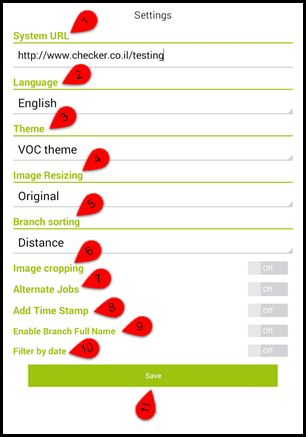
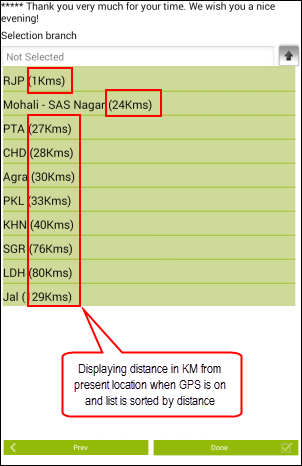
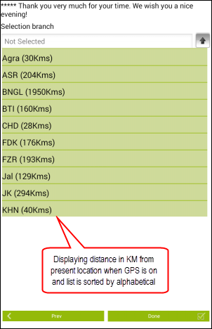
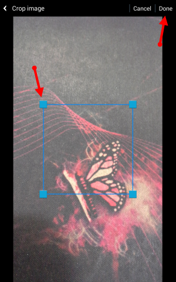

Settings
The initial screen will find the Settings screen. On this screen, the following options are available-

1.System URL:- Set the system URL (web address that is given to you by the company you work for)
2.Language:- Tap to select the language from the supported language list. The supported language interfaces are English, Spanish, Romanian, Hebrew, Japanese, Portuguese, French, Russian and Hindi etc.
3.Theme:- Use to apply color scheme on application's screens
4.Image Resizing:- This setting is use to resize images when attaching camera snapshot with an audit. Available options are: Original, Medium, Small and Ask.
4.1.Original: Default size of image as per camera setting.
4.2.Medium: Medium size is 100-(2*16)% (app will remove 32% pixel from image to make it resolution less.)
4.3.Small: Small is 100-(3*16)% (app will remove 48% pixel from image to make it resolution less.)
4.4.Ask: When user will start snap with camera, app will ask image resize options Original/Medium/Small
5.Branch sorting:- Select desire option as you need to sort the branches list that is given in questionnaire itself. Available options are Distance and Alphabetical. see examples
 
6.Image cropping:- This option is useful to crop an image to get desire visible portion when taking snapshot from camera. see below image. Tap and hold cropping tool to get desire portion then press Done button to attach with review. Tap Cancel if you don't want to crop image.

7.Alternate job:- In order to hide / show:- on job list. When its ON you will see list of alternate jobs once your tap Branh Name.
8.Add Time Stamp:- To display current date / time on images when you attach a image with an audit.
9.Enable Branch Full Name:- Display branch full name in job list. Short branch name will appear When its OFF.
10.Filter by date:- Filter jobs by dates on job list screen.
11.Save: Tap save button to save settings once you have done.